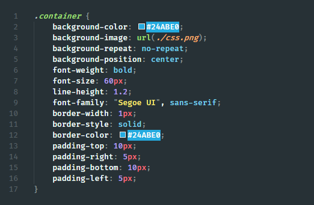
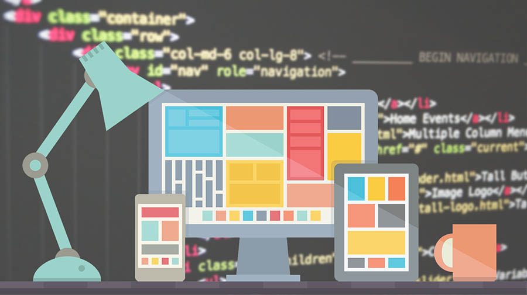

El proposito del crurso de diseño de sitios web, es el de conocer lenguajes como el html 5 y CCS, se utilizan para ordenar las instrucciones referentes a la apariencia de un sitio y presentar los contenidos de una página de forma atractiva. De este modo, HTML se emplea para estructurar el contenido de un sitio, mientras que CSS se usa para estructurar su presentación. Al desarrollar una página web es necesario hacer énfasis en la importancia de los elementos visuales para comunicar un mensaje. La presentación de los datos de una empresa y la usabilidad de la plataforma son factores fundamentales para atraer visitantes a tu sitio y retener su atención en el contenido que presentas
Temas

1. Qué es CSS
Segun el autor (08 de agosto de 2022) CSS son las siglas en inglés para «hojas de estilo en cascada» (Cascading Style Sheets). Básicamente, es un lenguaje que maneja el diseño y presentación de las páginas web, es decir, cómo lucen cuando un usuario las visita. Funciona junto con el lenguaje HTML que se encarga del contenido básico de las páginas. Se les denomina hojas de estilo «en cascada» porque puedes tener varias hojas y una de ellas con las propiedades heredadas (o «en cascada») de otras. Para muchas personas una simple plantilla de blog es suficiente. Aun así, cuando quieras personalizar la apariencia de un sitio necesitarás implementar CSS que, en conjunto con un buen CMS, te ayudará a potenciar el alcance de tu contenido
Para qué sirve CSS
Con CSS puedes crear reglas para decirle a tu sitio web cómo quieres mostrar la información y guardar los comandos para elementos de estilo (como fuentes, colores, tamaños, etc.) separados de los que configuran el contenido. Además, puedes crear formatos específicos útiles para comunicar tus ideas y producir experiencias más agradables visualmente para los usuarios del sitio web.
https://blog.hubspot.es/website/que-es-css
2. Que es Frameworks CSS

Segun Javier Eguiluz (2022) Un framework CSS es un conjunto de herramientas, hojas de estilos y buenas prácticas que permiten al diseñador web olvidarse de las tareas repetitivas para centrarse en los elementos únicos de cada diseño en los que puede aportar valor.
Los frameworks CSS más completos incluyen utilidades para que el diseñador no tenga que trabajar en ningún aspecto genérico del diseño web. Por este motivo, es habitual que los mejores frameworks CSS incluyan herramientas para:
Neutralizar los estilos por defecto que aplican los navegadores. Se trata de la habitual hoja de estilos reset.css que todos los diseñadores profesionales utilizan.
Manejar correctamente el texto, de forma que todos los contenidos se vean exactamente igual en todos los navegadores y que sean adaptables para mejorar su accesibilidad y permitir su acceso en cualquier medio y/o dispositivo.
Crear cualquier estructura compleja o layout de forma sencilla, con la seguridad de que funciona correctamente en cualquier versión de cualquier navegador.